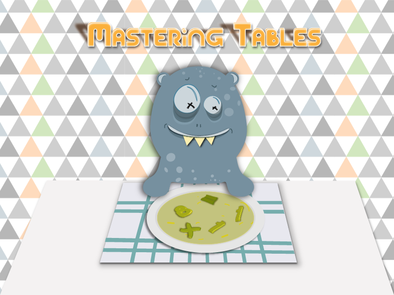
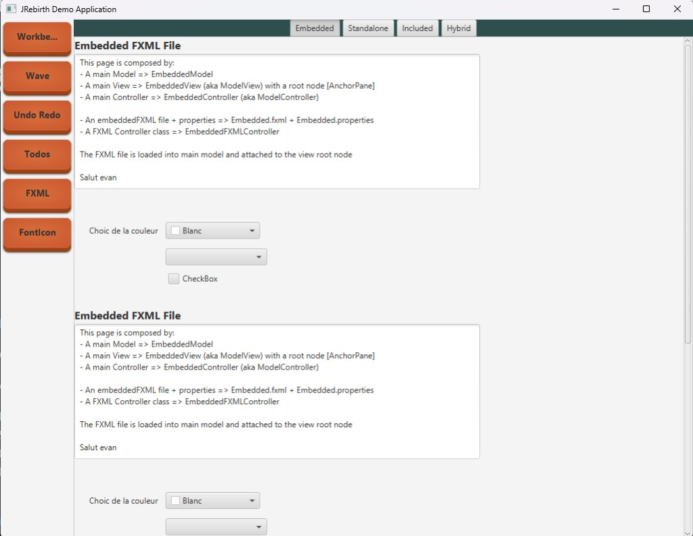

Why JRebirth
Make the complex feel simple.
Spend less time wiring your application together and more time building the experience that matters.
Component-based architecture
Organize JavaFX features as focused components with clear boundaries that stay understandable as the project grows.
Simple multithreading
Use commands, services and waves to structure work beyond the JavaFX application thread without drowning in plumbing.
Clean separation of concerns
Keep presentation, application logic and long-running work in clearly defined roles with the wB-CSMvc pattern.
Reusable modules
Compose UI building blocks and share behaviors across features instead of rewriting the same wiring again.
Open Source
Free under the Apache License 2.0, developed in the open on GitHub with demos, showcases and documentation.
JavaFX productivity
A focused framework guided by the KISS principle so you ship sophisticated desktop software with less boilerplate.
A better foundation
Structure that sets you free.
JRebirth uses the wB-CSMvc pattern to give every part of your application a clear responsibility. UI code stays focused on the interface; commands and services organize application work; behaviors cross-cut when needed; waves let components communicate.
Try it
Apps & demos
Standalone applications built with JRebirth. Wave, Todos, Workbench, FXML, Undo/Redo and FontIcon live inside the Showcase Demo.
 Featured product
EzDojo Manager
Featured product
EzDojo Manager
Real-world club management desktop app powered by JRebirth AF 12.

Application Mastering TablesTable mastery sample — sorting, filtering and rich data grids.
 Application
Comparison Tool
Application
Comparison Tool
Side-by-side comparison UI built as a full desktop tool.

Showcase Showcase DemoModular launcher embedding Wave, Todos, Workbench, FXML, Undo/Redo and FontIcon.
Talks
Presentations
Conference and meetup slide decks powered by the JRebirth presentation module.
Guided tour of the framework for meetups and workshops.
Presentation LightningTalkShort-format talk deck — slides as a native desktop app.
Presentation BreizhcampBreizhcamp conference presentation built with JRebirth.
 Presentation
EclipseCON
Presentation
EclipseCON
EclipseCON talk deck showcasing the application framework.
Start building
From idea to JavaFX application.
Add JRebirth to your Java project with Maven, then explore the source and examples. The current release targets Java 25 and JavaFX 26.
<!-- JRebirth Application Framework -->
<dependency>
<groupId>org.jrebirth.af</groupId>
<artifactId>core</artifactId>
<version>12.0.0</version>
</dependency>Guides & resources
Start fast, stay oriented.
Bootstrap a JRebirth app with the Maven archetype and run it in minutes.
FAQ License & FAQWhat JRebirth is, why use it, and answers to common project questions.
Links Useful linksSites, Javadoc, Maven Central, CI, issues and the software factory.
License Apache License 2.0Open-source terms, credits and how you can use JRebirth freely.
Build what's next
Give your JavaFX ideas room to rise.
A thoughtful foundation for sophisticated desktop software. Open source, component-oriented, and built for JavaFX developers.